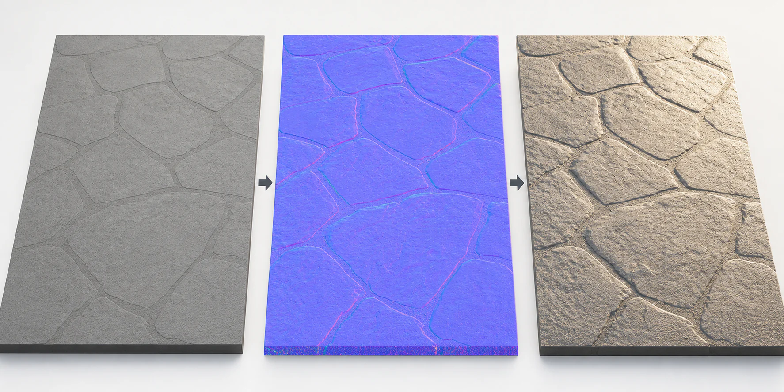
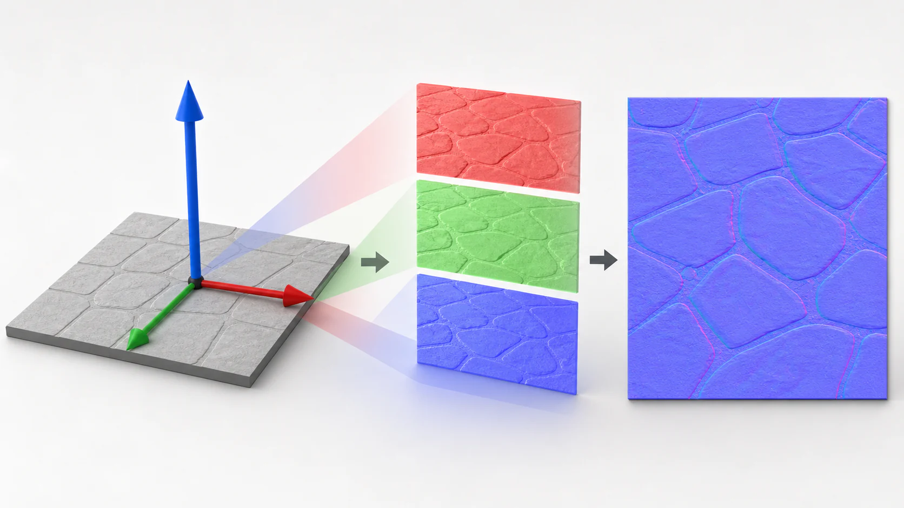
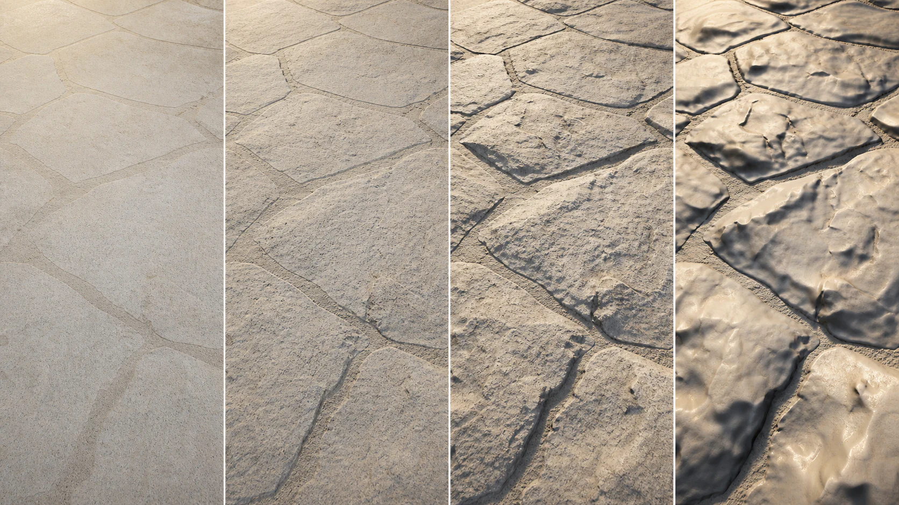
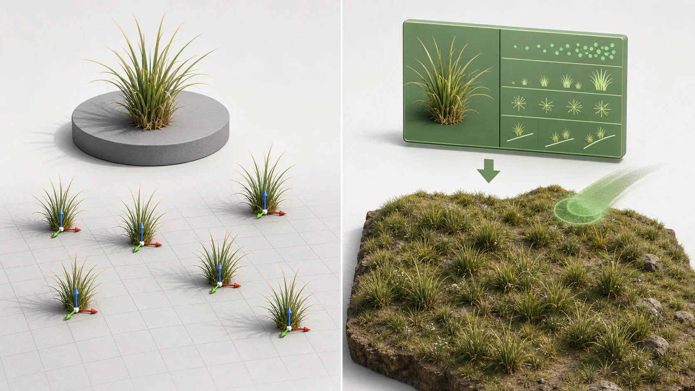
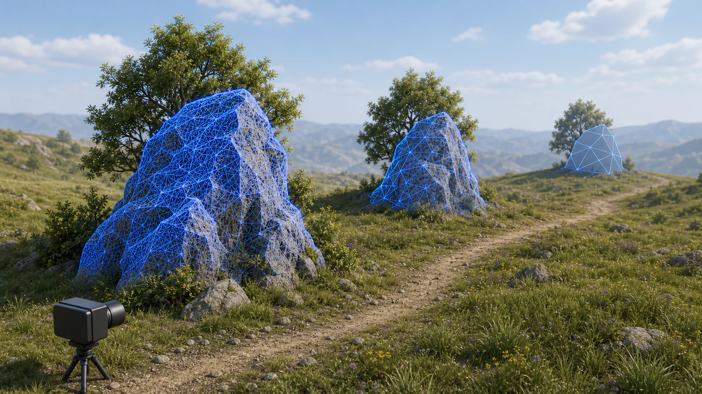
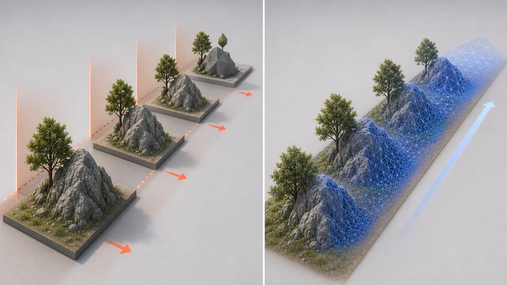
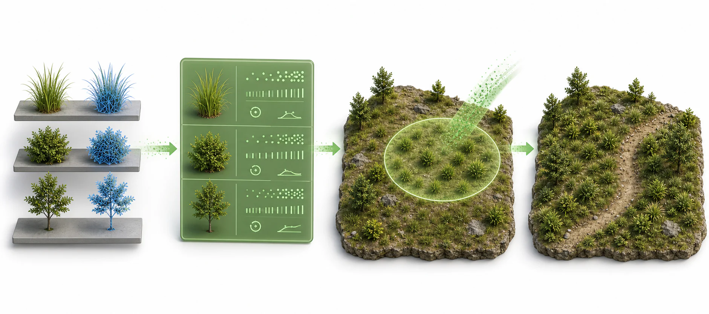
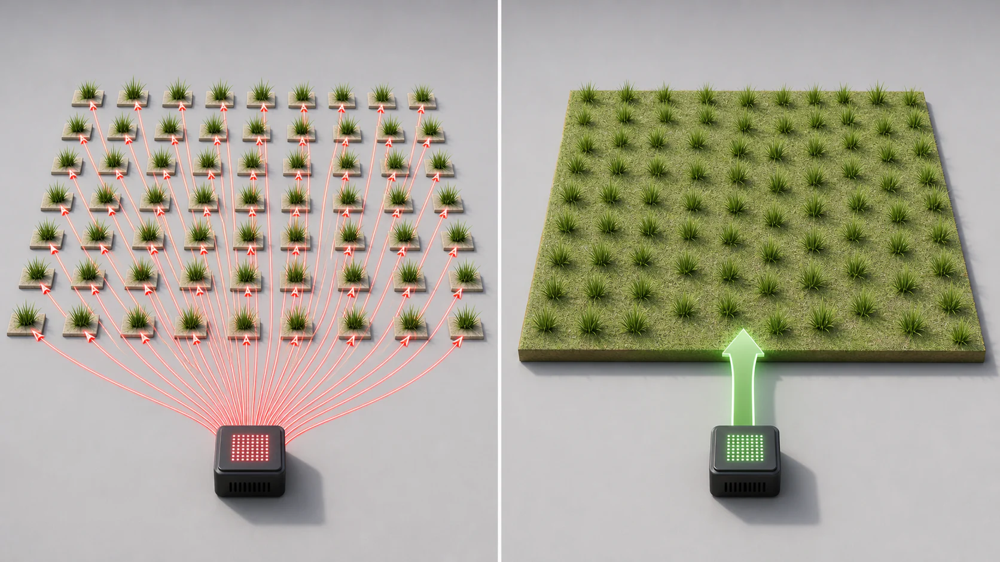
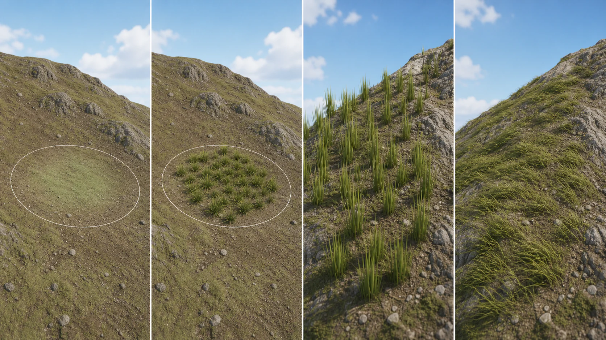

4주차 1교시 — 노말맵, Fab 에셋, 폴리지 기초 (학생용)
이번 시간이 끝나면 여러분은:
- 노말맵으로 바닥에 깊이감을 줄 수 있습니다
- Fab에서 나무/풀 에셋을 받고 나나이트를 설정할 수 있습니다
- 폴리지 시스템으로 풀과 나무를 대량 배치할 수 있습니다
핵심 개념 1: 노말맵 — 폴리곤 없이 깊이감 만들기
노말맵의 원리
3D에서 빛이 표면에 닿으면 어떻게 반사될지는 법선(Normal) 이 결정합니다. 법선이란 표면에 수직인 방향입니다. 바닥이 평평하면 법선은 위를 향하고, 경사면이면 법선이 기울어집니다.
빛은 법선 방향에 따라 반사됩니다. 법선이 위를 향하면 빛이 정면으로 반사되고, 기울어져 있으면 다른 방향으로 반사됩니다. 울퉁불퉁한 표면은 빛이 여러 방향으로 반사되면서 깊이감이 생기는 것입니다.
노말맵은 이 법선 방향을 텍스처에 저장합니다. 원래 평평한 표면인데, 텍스처가 법선이 기울어져 있다고 엔진에 정보를 전달합니다. 그러면 빛이 울퉁불퉁하게 반사됩니다. 실제로는 평평한데 울퉁불퉁해 보이는 것입니다.
비유하자면 — 평평한 벽에 벽돌 무늬 벽지를 바르면, 만져보면 평평하지만 빛에 따라 입체적으로 보입니다. 노말맵이 바로 그 벽지 역할입니다. 실제 벽돌을 쌓은 것은 아니지만 눈을 속이는 것입니다.

| 항목 | 설명 |
|---|---|
| 노말맵 | 표면의 법선 방향을 텍스처로 저장. 빛의 반사를 속여 깊이감 표현 |
| 장점 | 폴리곤을 추가하지 않으므로 성능 영향이 거의 없음. 기존 메쉬에 디테일을 더하는 가장 가성비 좋은 방법 |
| 한계 | 실제로 형태가 바뀌는 건 아님. 측면에서 보면 평평함이 드러남. 실루엣에는 영향 없음 |
RGB 채널의 의미 — 왜 보라색인가?
노말맵은 RGB 3개 채널에 법선 방향 정보를 저장합니다. 각 채널이 X, Y, Z 축의 기울기를 나타냅니다.

| 채널 | 방향 | 중간값(기울기 없음) | 의미 |
|---|---|---|---|
| R (빨강) | X축 (좌우) | 128 | 0이면 왼쪽으로 기울어짐, 255이면 오른쪽으로 기울어짐 |
| G (초록) | Y축 (상하) | 128 | 0이면 아래로, 255이면 위로 기울어짐 |
| B (파랑) | Z축 (수직) | 255 | 대부분 255에 가까움 — 법선이 위를 향하니까 |
평평한 표면의 법선은 수직으로 위를 향합니다. 그러면 R=128(좌우 기울기 없음), G=128(상하 기울기 없음), B=255(위를 향함)이 됩니다. 이 조합이 보라색입니다.
보라색 = 평평한 부분입니다. 보라색에서 벗어난 부분이 법선이 기울어진 곳, 즉 울퉁불퉁한 부분입니다.
Normal Intensity 조절
- Content Browser에서 3주차에 받은 Quixel 바닥 MI를 찾습니다
- 경로: Content > Fab > Megascans > Surfaces > [에셋 폴더] > High
- MI_ 로 시작하는 Material Instance를 더블클릭합니다
머테리얼 인스턴스 에디터가 별도 창으로 열립니다. 왼쪽에 3D 프리뷰 구체가 있고, 오른쪽에 Details 패널과 Layer Parameters 탭이 보입니다.
- Details 패널에서 Parameter Groups를 확인합니다
- 섹션이 번호순으로 나열되어 있습니다
- 00 - Global (Tiling, Offset)
- 01 - Base Color (색상, 채도, 밝기)
- 02 - Specular
- 03 - ORM (Occlusion, Roughness, Metallic)
- 04 - Normal ← 이번에 다룰 섹션
- 05 - SSS
- 06 - Displacement
- 04 - Normal 섹션을 클릭하여 펼칩니다
여기에 두 가지 파라미터가 보입니다.
NormalTexture: 왼쪽에 체크박스, 오른쪽에 보라색 텍스처 이미지가 표시됩니다. 이 체크박스가 활성화되어 있어야 노말 텍스처가 적용됩니다.
Normal Intensity: 왼쪽에 체크박스, 오른쪽에 숫자 값이 있습니다. 이 체크박스도 활성화해야 강도를 조절할 수 있습니다. 기본값은 보통 1.0입니다.
NormalTexture 체크박스와 Normal Intensity 체크박스 둘 다 활성화되어 있어야 합니다. 하나라도 꺼져 있으면 노말맵이 적용되지 않습니다.
- Normal Intensity 값을 바꿔가며 비교합니다
- 숫자 칸을 클릭하면 직접 입력할 수 있고, 숫자 위에서 좌우로 드래그하면 값이 변합니다
| Normal Intensity | 결과 |
|---|---|
| 0 | 완전히 평평. 깊이감이 전혀 없음. 평면 이미지처럼 보임 |
| 1 (기본) | 자연스러운 깊이감. 돌의 요철이 보이기 시작 |
| 3 | 과장된 깊이감. 요철이 강하게 드러남 |
| 10 | 부자연스러움. 표면이 뒤틀린 것처럼 보임 |

보통 1~2 범위가 적당합니다. 프리뷰 구체에서 0일 때는 매끈한 공이지만, 1로 바꾸면 표면에 요철이 생깁니다. 이는 법선 방향을 얼마나 강하게 적용하느냐의 차이입니다.
- 머테리얼 인스턴스 에디터를 닫고 레벨 뷰에서도 확인합니다
- 메인 에디터로 돌아가서 바닥을 자세히 봅니다
- 바닥에 이 머테리얼이 적용되어 있으면, 빛 각도에 따라 표면의 요철이 드러납니다
- Directional Light를 Ctrl+L로 회전해보면 빛에 따른 변화가 더 명확합니다. 빛이 비스듬하게 비추면 요철의 그림자가 더 뚜렷해집니다
노말맵 vs 디스플레이스먼트
노말맵 외에 실제로 표면을 변형하는 디스플레이스먼트라는 기법도 있습니다.
| 노말맵 | 디스플레이스먼트 | |
|---|---|---|
| 원리 | 빛의 반사만 속임 | 실제로 버텍스를 이동시켜 지오메트리를 변형 |
| 측면에서 | 평평함이 드러남 (실루엣 변화 없음) | 실제로 울퉁불퉁함 (실루엣도 변함) |
| 성능 | 거의 없음 | 폴리곤이 증가하므로 성능 비용 발생 |
| 용도 | 바닥, 벽, 대부분의 표면 디테일 | 극단적 클로즈업, 지형 변형 등 |
현재 단계에서는 노말맵이면 충분합니다. 시네마틱 영상에서 바닥을 극단적으로 클로즈업할 일이 있으면 그때 디스플레이스먼트를 고려합니다.
“노말맵이 실제로 폴리곤을 추가하나요?” → 아닙니다. 빛의 반사만 속이는 것입니다. 성능 영향이 거의 없는 이유가 바로 그것입니다.
학생 따라하기: 바닥 MI를 열고 04-Normal 섹션에서 Normal Intensity를 0, 1, 3으로 바꿔보세요. NormalTexture와 Normal Intensity 체크박스 둘 다 활성화되어 있어야 합니다.
핵심 개념 2: Fab 마켓플레이스와 에셋 워크플로우
Fab — 언리얼의 통합 마켓플레이스
환경을 만들려면 풀, 나무, 바위 같은 에셋이 필요합니다. 직접 3D로 모델링할 수도 있지만, 이미 잘 만들어진 에셋을 가져다 쓰는 것이 현실적입니다. 특히 Quixel Megascans 같은 포토그래매트리 기반 에셋은 직접 만들기 어려운 퀄리티입니다.
Fab은 Epic Games의 통합 마켓플레이스입니다. 2024년에 세 가지 서비스가 하나로 합쳐졌습니다.
| 이전 서비스 | 역할 | 현재 |
|---|---|---|
| Unreal Marketplace | UE 에셋 판매/구매 | → Fab으로 통합 |
| Quixel Bridge (Megascans) | 포토그래매트리 3D 스캔 에셋 | → Fab으로 통합 |
| Sketchfab | 3D 모델 공유 플랫폼 | → Fab으로 통합 |
UE 5.7에서는 Content Browser 상단의 Fab 버튼을 누르면 에디터 안에서 바로 에셋을 검색하고 프로젝트에 추가할 수 있습니다.
2025년부터 Quixel Megascans이 일부 유료화되었습니다. 무료 에셋이 약 1,500개 정도 제공되고 나머지는 유료입니다. 수업에서 사용하는 에셋은 무료 범위 안에 있습니다.
나무+풀 에셋 다운로드
나무 — European Spindle:
- Content Browser 상단 툴바에서 녹색 장바구니 아이콘이 있는 Fab 버튼을 클릭합니다
Fab 마켓플레이스 창이 에디터 안에서 열립니다. Epic Games 계정으로 로그인되어 있어야 합니다.
- 상단 검색바에 “European Spindle”을 입력하고 Enter를 누릅니다
검색 결과에 Quixel이 만든 나무 에셋이 나타납니다. 카테고리가 3D Models > Nature & Plants > Plants로 표시됩니다.
- 에셋을 클릭하면 상세 페이지가 열립니다
- 왼쪽에 3D 프리뷰, 오른쪽에 에셋 정보가 표시됩니다
- 품질 드롭다운에서 High quality를 선택합니다
- 나무는 High로 받는 것이 좋습니다. High quality로 받으면 나나이트가 기본으로 활성화되는 경우가 많고, 텍스처 해상도도 4K로 제공됩니다
- Add to Project를 클릭합니다
- 다운로드가 시작됩니다. 에셋 크기에 따라 몇 초~1분 정도 소요됩니다
풀 — Grass:
- 뒤로 가기(←)를 눌러 검색으로 돌아갑니다
- “Grass”를 검색합니다. Quixel의 풀 에셋을 선택합니다
- Medium 또는 High quality로 Add to Project합니다
에셋 폴더 구조 이해
다운로드가 완료되면 Content Browser에서 확인합니다.
경로: Content > Fab > Megascans > Plants > [에셋명] > High
폴더를 열면 여러 종류의 파일이 있습니다. 접두사로 어떤 타입인지 구분할 수 있습니다.
| 접두사 | 타입 | 용도 | 예시 |
|---|---|---|---|
| FT_ | Foliage Type | 폴리지 전용 데이터. Density, Scale, Placement 등 최적화 설정이 미리 포함되어 있음 | FT_[ID]_VarA |
| SM_ | Static Mesh | 3D 모델. 나무의 다양한 변형이 VarA, VarB, VarC… 로 제공됨 | SM_[ID]_VarA |
| MI_ | Material Instance | 머테리얼 인스턴스. 3주차에서 배운 개념. 마스터 머테리얼의 파라미터를 조절한 것 | MI_[ID] |
| **MI_*_Billboard** | Material Instance | 원거리에서 3D 모델 대신 2D 평면으로 대체하는 머테리얼. 폴리지에서는 사용하지 않음 | MI_[ID]_Billboard |
| T_ | Texture | Base Color(_B), Normal(_N), ORM(_ORM) 등 텍스처 파일 | T_[ID]_4K_B |
FoliageTypes 폴더에 FT_ 에셋이 따로 있는 경우가 있습니다. 이것을 사용하는 것이 가장 좋습니다. 폴리지 모드에 최적화된 설정이 이미 들어있기 때문입니다. FT_가 없으면 SM_을 드래그해도 자동으로 변환됩니다.
MI_[ID]_Billboard는 사용하지 마세요. 이것은 멀리서 볼 때 2D 이미지로 대체하는 용도입니다. 바람 설정을 할 때 실수로 이것을 열면 안 됩니다.

나나이트 — 전통 LOD vs 자동 LOD
Level of Detail(LOD) 은 카메라에서 멀리 있는 오브젝트의 폴리곤을 줄이는 기법입니다. 가까이 있을 때는 디테일하게, 멀리 있을 때는 간략하게 표시합니다.

전통 LOD vs 나나이트 비교:
| 전통 LOD | 나나이트 | |
|---|---|---|
| LOD 제작 | LOD0(원본), LOD1(간략), LOD2(더 간략)… 수동으로 여러 단계를 만들어야 함 | LOD를 만들 필요 없음. 엔진이 자동 관리 |
| 전환 방식 | 특정 거리에서 뚝 바뀜 → 팝핑(뚝 바뀌는 느낌) 발생 | 픽셀 단위로 매끄럽게 전환. 팝핑 없음 |
| 메모리 | 각 LOD 단계의 메쉬를 다 저장 | 하나의 고해상도 메쉬만 저장. 나나이트가 런타임에 최적화 |
| UE 5.7 | 여전히 사용 가능하지만 레거시 | 표준 방식. Nanite Foliage(Experimental)로 더 확장 중 |

나나이트를 켜면 수백만 폴리곤의 메쉬를 넣어도 엔진이 알아서 줄여줍니다. 가까이 가면 디테일이 올라가고, 멀어지면 자동으로 줄어듭니다. LOD를 수동으로 만들 필요가 없습니다.
나나이트 활성화:
- Content Browser에서 다운로드한 에셋 폴더를 엽니다
- Static Mesh(SM_) 파일들을 모두 선택합니다 (Ctrl+A 또는 Ctrl+클릭)
- 선택한 상태에서 마우스 오른쪽 버튼(RMB)을 클릭합니다
- STATIC MESH ACTIONS 섹션에서 Nanite에 마우스를 올립니다
- Enable Nanite (N Meshes)를 클릭합니다
- N은 선택한 메쉬 개수입니다 (예: Enable Nanite (10 Meshes))
- 에셋 위에 마우스를 올려 정보 팝업(툴팁)을 확인합니다
| 항목 | 값 예시 | 의미 |
|---|---|---|
| Vertices | 5,494 | 원본 버텍스 수 |
| Triangles | 3,300 | 원본 삼각형 수 |
| Nanite Vertices | 33,049 | 나나이트가 관리하는 버텍스 |
| Nanite Triangles | 42,200 | 나나이트가 관리하는 삼각형 |
| Nanite Enabled | True | ← 이것이 True이면 성공 |
Nanite Enabled가 True로 표시되면 성공입니다. 원본 Triangles가 3,300인데 Nanite Triangles가 42,200인 것은 나나이트가 더 정밀한 메쉬로 관리하고 있다는 의미입니다.
나나이트를 켜지 않고 폴리지를 수천 개 배치하면 프레임이 크게 떨어질 수 있습니다. 풀 하나가 3,000 폴리곤이면 1,000개 배치 시 300만 폴리곤이 됩니다. 폴리지 칠하기 전에 나나이트를 먼저 활성화하세요.
나나이트 뷰로 확인:
- 뷰포트 상단 왼쪽의 Lit 드롭다운을 클릭합니다
- Nanite Visualization > Overview를 선택합니다
- 4분할 화면으로 Triangles, Clusters, Instances, Primitives가 표시됩니다
- 가까이 있는 오브젝트: 삼각형이 많음 (밝게 표시)
- 멀리 있는 오브젝트: 삼각형이 줄어듦 (어둡게 표시)
- 확인 후 Lit 드롭다운에서 다시 Lit을 선택하여 원래 모드로 돌아옵니다
Preserve Area — 멀리서 사라지는 문제 해결:
나나이트가 너무 과하게 줄이면 멀리 있는 풀이 아예 사라질 수 있습니다. 이때 Preserve Area를 사용합니다.
- SM_ 에셋을 하나 더블클릭하여 메쉬 에디터를 엽니다
- 오른쪽 Details 패널에서 Nanite Settings 섹션을 찾습니다
- Preserve Area 체크박스를 활성화합니다
- 멀리 있어도 최소한의 형태(실루엣)가 유지됩니다
에셋이 여러 개일 때 하나씩 체크하면 비효율적이므로, Property Matrix로 대량 설정합니다.
- SM_ 에셋을 모두 선택합니다 (Ctrl+클릭 또는 Ctrl+A)
- RMB > Asset Actions > Edit Selection in Property Matrix를 클릭합니다
- Property Matrix 창이 열립니다. 왼쪽에 에셋 목록, 오른쪽에 속성 목록
- 오른쪽에서 NaniteSettings > Nanite Settings > Preserve Area를 체크합니다
- 선택한 모든 에셋에 일괄 적용됩니다
Property Matrix는 여러 에셋의 속성을 엑셀처럼 한 번에 편집하는 도구입니다. 에셋이 100개여도 한 번에 설정할 수 있습니다.
“나나이트가 하는 역할은?” → 수백만 폴리곤을 자동으로 LOD 관리해서 성능을 확보하는 것입니다. 전통 LOD처럼 수동으로 만들 필요 없이, 엔진이 알아서 최적화합니다.
핵심 개념 3: 폴리지 시스템 기초
폴리지 시스템이란

폴리지 시스템은 내부적으로 Instanced Static Mesh(ISM) 를 사용합니다. ISM은 같은 메쉬를 여러 개 배치할 때 하나의 드로우콜로 처리하는 방식입니다.
| 개별 배치 (일반 Actor) | 폴리지 시스템 (ISM) | |
|---|---|---|
| 배치 방식 | Content Browser에서 하나씩 드래그 앤 드롭 | 브러시로 칠하기 |
| 작업 시간 | 100개 배치에 수십 분 | 수천 개를 몇 초 |
| 드로우콜 | 오브젝트마다 1번씩 (100개 = 100 드로우콜) | 같은 메쉬는 1번으로 통합 (100개 = 1~수 개 드로우콜) |
| 수정 | 하나씩 선택해서 이동/삭제 | Density, Scale로 일괄 조절. 브러시로 영역 단위 삭제 |

GPU에게 ’이것을 그려라’라고 명령을 보내는 횟수입니다. 적을수록 성능이 좋습니다. 풀을 1,000개 개별 배치하면 1,000번 명령을 보내야 하지만, 폴리지 시스템으로 배치하면 1~2번이면 됩니다.
폴리지 모드 진입
- 에디터 상단 모드 바에서 Selection Mode 드롭다운을 클릭합니다
- Selection(Shift+1), Landscape(Shift+2), Foliage(Shift+3), Mesh Paint(Shift+4) 등
- Foliage를 선택합니다 (또는 단축키 Shift+3)
- 좌측에 Foliage 패널이 열립니다
패널은 세 영역으로 구성됩니다.
| 영역 | 위치 | 설명 |
|---|---|---|
| 도구 바 | 상단 (2줄) | Select, All, Desel., Invalid, Lasso, Paint, Reapply, Single, Fill, Erase, Remove, Move — 12개 도구가 나열되어 있습니다 |
| Brush Options | 중단 | Brush Size(브러시 크기), Paint Density(칠하기 밀도), Erase Density(지우기 밀도). 그 아래에 Filters 섹션이 있습니다 |
| 에셋 목록 | 하단 | + Foliage 버튼과 검색창, 그리고 “+ Drop Foliage Here” 영역. 여기에 에셋을 드래그하여 등록합니다 |
실제로 주로 사용하는 도구는 Paint(칠하기)와 Erase(지우기) 두 가지입니다.
| 도구 | 역할 | 사용 빈도 |
|---|---|---|
| Paint | 브러시로 칠하여 폴리지 배치 | |
| Erase | 브러시로 폴리지 지우기 | |
| Select | 개별 폴리지 인스턴스 선택 | |
| Single | 한 개씩 정밀 배치 | |
| Fill | 전체 영역 채우기 |
에셋 등록
- Content Browser에서 다운로드한 풀 에셋 폴더를 엽니다
- Content > Fab > Megascans > Plants > Grass_[ID] > High
- FoliageTypes 폴더가 있으면 그 안의 FT_ 에셋들을 전부 선택합니다 (Ctrl+A)
- FoliageTypes 폴더가 없으면 SM_ 에셋을 선택해도 됩니다 (자동 변환)
선택한 에셋들을 Foliage 패널 하단의 “+ Drop Foliage Here” 영역에 드래그 앤 드롭합니다
에셋 목록에 등록됩니다
- 각 에셋 옆에 체크박스와 숫자(배치된 개수)가 표시됩니다
- 처음에는 숫자가 0입니다
같은 방식으로 나무(European Spindle)의 FT_ 또는 SM_ 에셋도 등록합니다.
나무와 풀을 함께 등록하면 동시에 칠해집니다. 나무만 칠하고 싶으면 풀의 체크박스를 해제합니다.
Paint — 칠하기
- 패널 상단에서 Paint 아이콘을 선택합니다 (파란색 붓)
- 에셋 목록에서 칠하고 싶은 에셋의 체크박스를 활성화합니다
- 체크 안 된 에셋은 칠해지지 않습니다
- 여러 개 체크하면 혼합되어 칠해집니다
- 뷰포트에서 바닥(Cube 또는 지면) 위에 마우스를 가져갑니다
- 파란색/연보라색 반투명 원형이 표시됩니다. 이것이 브러시 영역입니다
- 원의 크기가 배치 범위입니다. 크기는 Brush Size로 조절합니다
- 마우스 왼쪽 버튼을 누른 채 드래그합니다
- 풀이 칠해집니다. 뷰포트에 풀 메쉬가 나타나기 시작합니다
- 에셋 목록 옆의 숫자가 올라갑니다 — 배치된 인스턴스 개수입니다
- 여러 에셋이 체크되어 있으면 랜덤하게 섞여서 배치됩니다
Brush Options 조절
Foliage 패널 중단의 Brush Options에서:
Brush Size: 브러시의 크기입니다. [ ] 키로 빠르게 조절합니다 (왼쪽 대괄호 = 축소, 오른쪽 대괄호 = 확대)
Paint Density: 한 번 드래그할 때 얼마나 빽빽하게 칠할지 결정합니다 (0~1). 기본 0.5를 1.0으로 올립니다
[ ] 키로 브러시 크기를 빠르게 바꿀 수 있습니다. 폴리지뿐 아니라 랜드스케이프에서도 같은 키를 사용합니다.
Density와 Scale 조절
등록된 에셋을 클릭하면 아래에 세부 설정이 펼쳐집니다. Painting 섹션을 펼칩니다.
Density / 1Kuu:
1Kuu는 1K Unreal Units의 약자입니다. 1K = 1,000 Unreal Units, 즉 언리얼 기본 단위로 약 10m 길이입니다. Foliage의 Density / 1Kuu는 1000×1000 Unreal Units 영역(대략 10m×10m)에 몇 개를 배치할지 결정합니다.
- 기본값 100은 1000×1000 Unreal Units 영역에 100개를 배치하는 설정입니다. 숫자만 보면 많아 보이지만 실제로 해보면 듬성듬성할 수 있습니다
| 값 | 결과 |
|---|---|
| 100 (기본) | 듬성듬성. 풀밭이라기엔 부족 |
| 300 | 적당한 밀도. 일반적인 풀밭 |
| 500 | 빽빽한 풀밭 |
| 1000+ | 매우 빽빽. 성능에 주의 |
Scaling:
- 드롭다운에서 Uniform을 선택합니다 (비율 유지)
- Scale X의 Min과 Max를 설정합니다
- Min: 0.6 (원본의 60% 크기)
- Max: 1.5 (원본의 150% 크기)
- 이 범위에서 랜덤한 크기로 배치됩니다
Density를 300~500으로, Scale을 0.6~1.5로 하면 자연스러운 풀밭이 됩니다. 모든 풀이 같은 크기이면 부자연스럽습니다. 랜덤 크기가 자연스러움의 핵심입니다.
Placement 설정
Painting 아래에 Placement 섹션이 있습니다. 지금 당장 바꿀 것은 아니지만 알아두면 좋습니다.
| 항목 | 설명 | 추천 설정 |
|---|---|---|
| Z Offset | 바닥에서 위/아래로 오프셋(Min~Max). 풀이 바닥에 묻혀서 안 보이면 Max를 5 정도로 올립니다 | 기본값 유지. 풀이 바닥에 묻히는 문제가 생기면 조절 |
| Align to Normal | 경사면에서 풀이 지면 각도에 맞게 기울어짐. 체크 안 하면 경사면에서도 수직으로 서 있어서 부자연스러움 | 지금은 Cube 바닥이라 의미 없음. 2교시 랜드스케이프에서 체크 |
| Random Yaw | 풀이 랜덤한 방향으로 회전. 기본 체크됨 | 기본 유지. 해제하면 모든 풀이 같은 방향을 향합니다 |
Placement 설정은 2교시 랜드스케이프를 배울 때 중요해집니다. 경사면에서 Align to Normal을 켜지 않으면 풀이 경사를 무시하고 수직으로 서 있게 됩니다.
Erase — 지우기
실수로 칠했거나 너무 많이 칠했을 때 지우는 방법입니다.
두 가지 방법이 있습니다.
방법 1: 패널 상단 도구 바에서 Erase 아이콘을 선택한 후 뷰포트에서 드래그합니다. 브러시 영역 안의 폴리지가 지워집니다. 브러시 크기는 [ ] 키로 조절 가능합니다
방법 2 (추천): Paint 모드 상태에서 Shift를 누른 채 드래그합니다
Shift를 누르면 즉시 지우기로 전환되고, 떼면 다시 칠하기로 돌아옵니다
Paint와 Erase를 도구 바에서 왔다 갔다 할 필요 없어서 훨씬 빠릅니다
칠하다가 실수하면 Shift 누르고 드래그합니다. 모드를 바꿀 필요가 없습니다. 이것을 습관 들이면 작업 속도가 크게 올라갑니다.

학생 따라하기
학생 따라하기:
- Fab에서 나무+풀 다운로드 (이미 했으면 패스)
- 나나이트 활성화 (SM_ 전체 선택 > RMB > Nanite > Enable)
- Foliage 모드 (Shift+3) > FT_ 에셋을 패널에 드래그하여 등록
- Paint 선택 > 체크박스 활성화 > 뷰포트에서 드래그
- Density / 1Kuu를 300~500(1000×1000 Unreal Units 영역 기준), Scale Uniform 0.6~1.5로 설정
- Preserve Area 체크 (Property Matrix 활용)
- 지우기: Shift+드래그
핵심 요약
-
노말맵: 법선 방향을 RGB 텍스처에 저장해서 빛의 반사를 속이는 기술. 폴리곤 추가 없이 깊이감을 만듭니다. Normal Intensity 1~2가 적당합니다. 보라색 = 평평한 부분입니다.
-
나나이트: 전통 LOD(수동 제작, 팝핑 발생)를 대체하는 자동 LOD 시스템입니다. 수백만 폴리곤도 실시간 최적화합니다. 폴리지 전에 먼저 활성화합니다. Preserve Area로 원거리 형태 보존, Property Matrix로 대량 설정이 가능합니다.
-
폴리지: ISM 기반으로 수천 개 메쉬를 효율적으로 배치하는 시스템입니다. 개별 배치(100개=100 드로우콜) vs 폴리지(100개=1 드로우콜). Shift+3으로 모드 진입 > FT_ 등록 > Paint. Density/1Kuu는 1000×1000 Unreal Units 영역 기준으로 300~500, Scale Uniform으로 크기 다양성(0.6~1.5). 지우기는 Shift+드래그입니다.